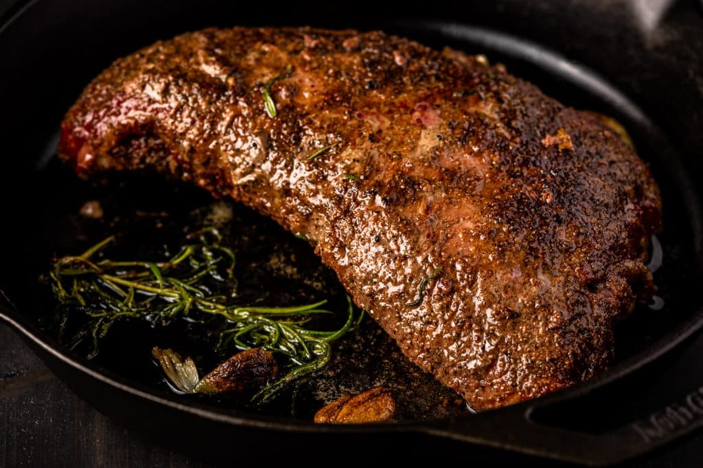

Smoked Tri Tip

Credit to Susie Bulloch and "Hey
Grill Hey" for this
recipe
Description
Smoked Tri Tip is a flavorful and juicy steak that will soon become one of your favorites. When cooked correctly,
it’s incredibly tender and completely delicious. In today’s post, I’ll teach you how to cook tri tip like a pro!
Ingredients
- 1 2-3 pound tri tip roast
- 2 Tablespoons Beef Seasoning (or equal parts salt, pepper, and garlic powder)
- 3 Tablespoons salted butter
- 1 sprig rosemary
Steps
- Preheat the smoker. Preheat your smoker to 225 degrees F. I like to use a strong wood like oak or hickory.
- Season the meat. Season the tri tip on all sides with the Beef Seasoning or equal parts salt, pepper, or garlic
powder. Lightly press the seasoning into the meat.
- Place in the tri tip directly on the grill grates of your smoker. Close the lid and smoke until the internal
temperature is within 5-10 degrees of your target final temperature (115 degrees F for a rare roast, 125 for a
medium rare roast, 135 for a medium roast, 145 for a medium well roast, or 150 for a well done roast).
- Preheat a cast iron skillet for searing. When your tri tip is near the correct internal temperature, preheat a
cast iron skillet over high heat. Remove your tri tip from the smoker.
- Sear the tri tip. Put 2-3 tablespoons of butter into the cast iron skillet and let it melt. Drop in the sprig of
rosemary and then place the tri tip into the sizzling butter. Sear the tri tip for 2-3 minutes per side,
spooning the butter and rosemary over the steak as it cooks.
- Rest, slice, and serve. Pull your roast out of the pan and move onto a cutting board. Allow the roast to rest
for 15 minutes before slicing against the grain and serving. The grain changes in a tri tip, so I always start
at the smallest point end and angle my knife as needed to keep my slices going against the grain.